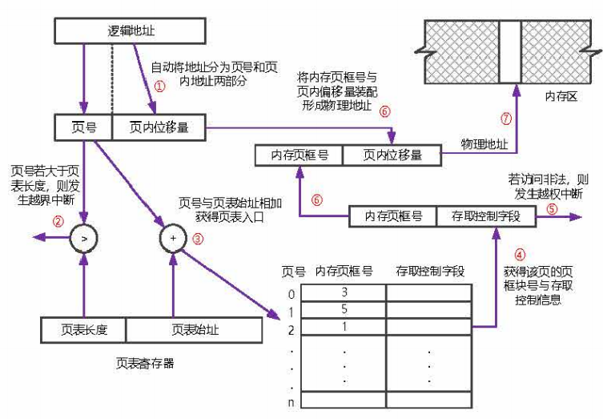
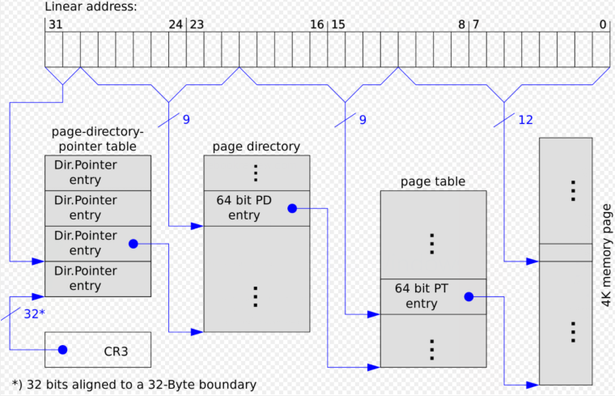

（封面是写这个玩意儿的时候，百度 PAE 的第二张图片）
一、备忘
要不是今天看到，真的就快忘了。
虚拟地址是假的，但也不完全是假的。至少它的偏移量还能用。而偏移量的长度决定于 内存页大小。有的时候我就觉得我像个 sb，地址是 32 位的怎么了？ 32 位的地址不能有 12 位长度的偏移量吗？在 32 位系统中，谁定义了 偏移量必须大于 16 位呢 ？我为什么之前就是看不得偏移量长度小于 16 位呢？这是 bias discrimination！
除去偏移量，前面剩下的就和页表有关了。但不一定是一个页表，如果是多级页表的话，前面的那些位会和很多个页表有关。
这里就要说到一个小学生都明白的数字关系了：假设我地址是 32 位的，同时也只有一级页表。如果偏移量是 x 位，那页表中 与物理地址无关 的项（包括存储控制字段及其他字段）也是 x 位。
（这个 32 位地址 指的是虚拟空间地址，是由 页表虚拟页号 + 偏移量 组成的。通过虚拟页号，在页表内寻找，把找到的 页框号 和偏移量拼在一起组成物理地址）

我是想不明白为什么一开始我想不明白这一点的。偏移量是 x 位，地址里面剩下和一级页表有关的不就是 32-x 位了吗？那页表里面不就有 32-x 位表示物理地址，从而就只有 x 位表示地址不相关的了吗？
这些不相关的可能和 “是否存在主存中”、“可否可用” balabala 有关吧？
二、虚拟内存 和 “页”
刚刚是一级页表。按道理来说，地址 32 位，最大可能访问范围在 4GB 以内。我也不知道为什么需要访问 4GB 以外的地方。可能是和吞吐量有关？我也不懂。总之现在想要访问 4GB 以外的地方。常理来看，32 位的地址线，怎么搞都不可能。但是 虚拟内存 没有常理。
书上有这么一段话：
1 | 1961 年，曼彻斯特的一组研究人员提出了一种自动执行覆盖过程的方法，程序员甚至不用知道到底发生了什么…… |
如果提到 “页” 这个概念，我想一定不是简简单单地使用 32 位的地址线 直接寻物理地址 了。因为 “页” 这个概念，已经是一个比 “直接寻址” 层次还要高的抽象了。提到 “页” 这个名词，如果能够给它搭配一个动词的话，我第一个想到的是 “换”，第二个是 “缺”。而这两个动词都和 “虚拟内存” 相关联。这可能是我之前本应知道，但是的确不知道的事情了。
抛开数字 “32” 的束缚，可以访问超出 4GB 范围的存储单元：
假设偏移量还是 x，但如果 页表 中 与物理地址无关 的项不再是 x 位，而变成了 x-1 位（比如我把 存储控制字段 压缩了一位），这就导致 虚拟页号指向的页表项 中的 页框号 可以扩展一位，变成了 32-x+1 位。合上之前的偏移量 x 位，变成了 33 位。
三、现在已经 33 了
再反过来推，现在 “变成 33 位了”，“变成 33 位” 这句话的主语是……
得到 33 是通过压缩原有的 存储控制字段 做到的。页表还和以前一样，还是 32 位长度的。但是拼接出来的地址却变成了 33 位。从另外一个角度看，由于页表的 页框号 增加了一位，且现在是一级页表，页表可能容纳的虚拟地址数量也增大了一倍。虚拟地址中的 虚拟页号 也增加了一位，这导致：虚拟地址从 32 位变成了 33 位。
emm 所以现在该变成 33 位的，是地址总线。
那它还是 32 位系统吗？这个毫无疑问当然是的。只是它地址总线不是 32 位长度而已。它的寄存器都还是 32 位。这就有个问题，如果寄存器还是 32 位，地址总线变成了 33 根，那怎么存啊？我不清楚，但我反而想问 “为什么要存啊？”
四、多级页表
刚才这波整得很智障。
原因在于拘泥于一级页表。如果是多级页表的话，话就好说多了。
像上面所说的，如果想要进一步扩展寻址空间，就需要再使用更多根的地址总线。刨根问底，是需要 存储控制字段 中的 reserved 字段支持…… 如果不使用压缩存储控制字段的方式的话，那只有 将 32 位页表项 -> 64 位页表项 这一个办法了。
由于一页的大小并不会随者 页表项 的扩大而变化，这导致一页内（2^12 = 4KB）能够存储的页表项更好了，从 1024 变成了 512（2^9）。
根据 Physical-Address-Extension-Wikipedia 中所述，PAE 将原本的 32 位虚拟空间地址中的 20 位虚拟页号拆分成了 2+9+9。两个 9 就是两级页表，2 是最高级页表，最高级页表只有 2^2 = 4 个页表项。

而学过操作系统的我还记得，真实物理地址的拼接，与 高级页表 没有关系，只和最低级的页表有关。现在最低一级的页表，虽然一页只有 512 个页表项，但是每一项都是 64 位。也就是说，不仅仅是 4GB 了，地址线再多 20 根理论上应该都没有问题。